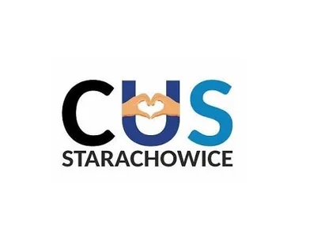

🌸 Spotkanie
🌸 Spotkanie18
30 marca 2026
Spotkanie Wielkanocne 2026
Gościliśmy Sekretarza Miasta Pana Macieja Myszkę oraz delegację Uniwersytetu Trzeciego Wieku.
Klub Abstynenta „Nadzieja” to bezpieczne miejsce, gdzie osoby zmagające się z uzależnieniem i ich bliscy znajdują wsparcie, terapię i wspólnotę. Działamy nieprzerwanie od ponad 35 lat.
Nie oceniamy, nie potępiamy – jesteśmy tu, by słuchać i pomagać.
Jeśli alkohol lub inne substancje przejęły kontrolę nad Twoim życiem – możemy pomóc Ci odzyskać wolność. Krok po kroku, bez osądzania.
Uzależnienie dotyka całą rodzinę. Oferujemy wsparcie, psychoedukację i grupę dla bliskich osób z problemem alkoholowym.
Prowadzimy wsparcie i terapię dla osób doznających przemocy domowej oraz osób, które ją stosują.
Konflikty rodzinne, problemy emocjonalne, potrzeba rozmowy – jesteśmy dostępni. Pierwsza wizyta nie zobowiązuje.
ul. Murarska 14, 27-200 Starachowice · Pełny harmonogram →
Zadzwoń, napisz lub przyjdź – nie oceniamy, tylko pomagamy. Nasza pomoc jest całkowicie bezpłatna.
Kliknij w kartę aby zobaczyć pełny opis i galerię zdjęć.
🌸 SpotkanieGościliśmy Sekretarza Miasta Pana Macieja Myszkę oraz delegację Uniwersytetu Trzeciego Wieku.
 🎂 Jubileusz
🎂 Jubileusz
Świętujemy 36 lat nieprzerwanej służby i niesienia pomocy naszej społeczności.
 🌸 Rocznica
🌸 RocznicaPiękna rocznica obchodzona razem z Jubilatką. Życzymy wytrwałości i kolejnych lat w trzeźwości!
Realizujemy zadania zlecone przez Gminę Starachowice i Starostwo Powiatowe. W 2026 r. wartość zleconych zadań wyniosła łącznie 67 000 zł.


W naszym Stowarzyszeniu odbyło się tradycyjne spotkanie wielkanocne „Jajeczko”. Swoją obecnością zaszczyciłi nas: Sekretarz Urzędu Miejskiego Pan Maciej Myszka (reprezentujący Prezydenta Marka Materka) oraz delegacja Uniwersytetu Trzeciego Wieku i studenci psychologii.
Jako gospodarze dziękujemy za ten czas pełen życzliwości. Wszystkim życzymy Wesołych i Spokojnych Świąt Wielkanocnych! 🌸


23 marca 1990 roku powstał Klub Abstynenta „Nadzieja”. Dziś świętujemy 36 lat nieprzerwanej działalności i niesienia pomocy osobom uwikłanym w uzależnienia. Dziękujemy wszystkim, którzy tworzą naszą wspólnotę!
7 Lat Abstynencji Renaty! Tę piękną rocznicę obchodziliśmy razem z Jubilatkimi w naszym Stowarzyszeniu. Życzymy wytrwałości i kolejnych lat w trzeźwości!